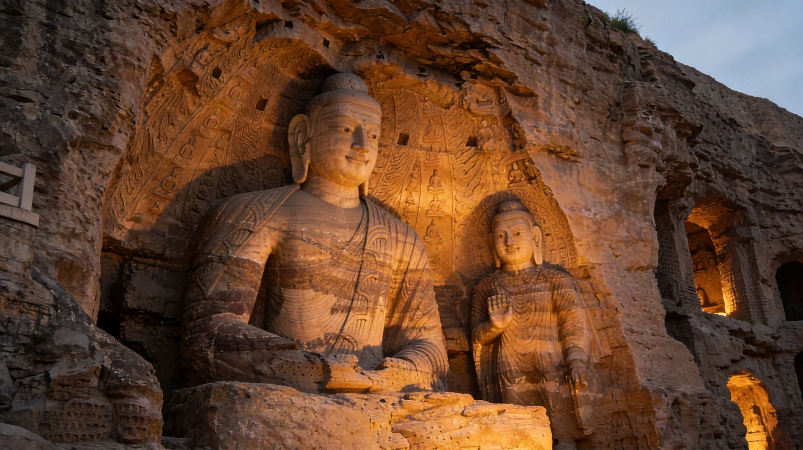
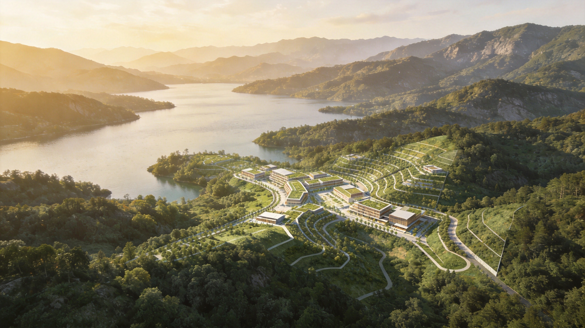

Anyue Sports Center Architectural Concept Design
CULTURE · NATURE · CONCEPT
一条文化根，一面湖山水
A Cultural Root, A Lakeside Landscape


核心逻辑
文化定形，自然定境——两条副线，一条主线（健康）贯穿
文化 · 定形
安岳石刻——石的质感、窟的光影、线的流动，是建筑定「形」的母题
自然 · 定境
滴水湖——三面隐、一面开，是建筑定「境」的母题
3
/12